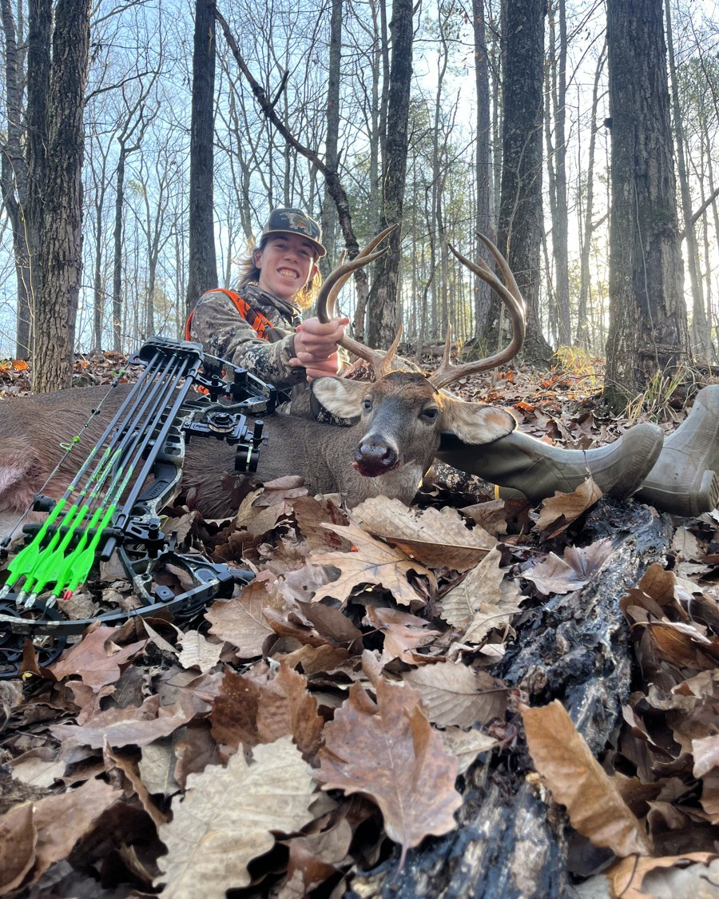
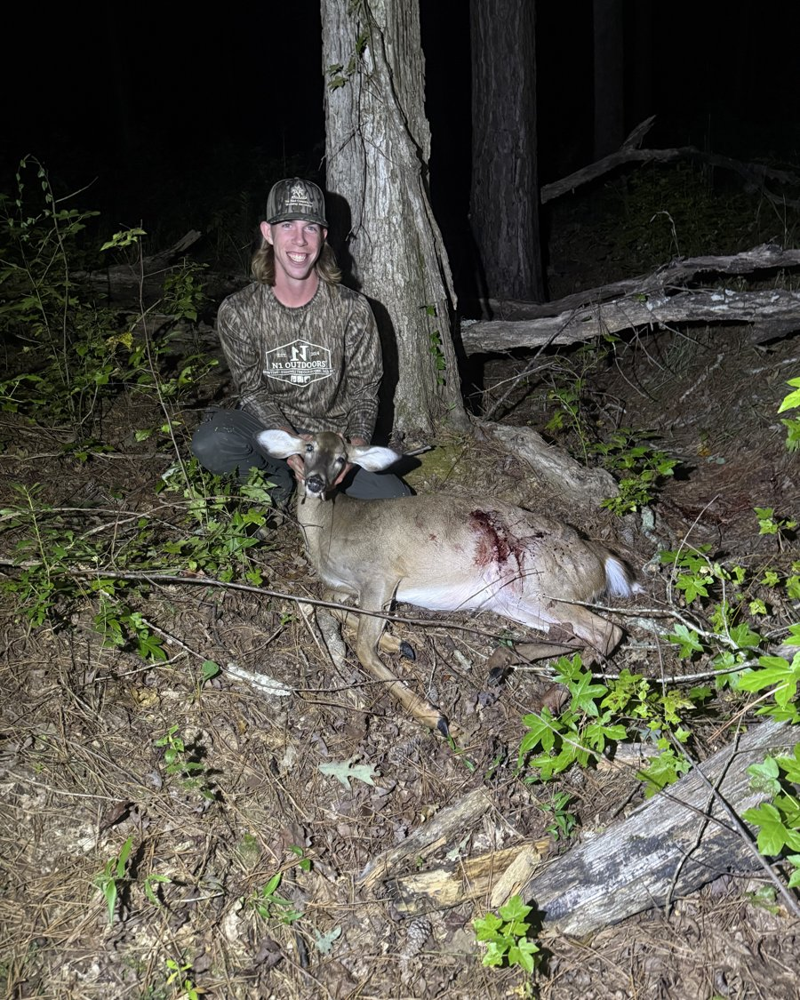

I grew up hunting deer with my dad, who taught me everything I know — I killed my first deer at eight years old and I've been hooked ever since. I hunt nearly every day of the season, almost always with a bow. Every now and then, toward the end of the year, I'll break out one of my granddad's or my dad's guns, but archery is where my heart is. When it's not deer season, you'll find me, Jack, and our dad out on the farm — checking for sheds, planting summer food plots, and getting the winter plots ready. For me, it was never really about the kill. Some of my best hunts are the ones where I never fired a shot — just being out in the woods, taking in God's creation, and watching deer do what they do. That's what Jack, my dad, and I love, and it's what we hope to share with y'all through Modern Tradition.

Add a couple of sentences about Jack — same idea, his own angle on the hunt.
We're Eli and Jack — twin brothers who grew up hunting turkeys, deer, hogs, and birds together. Replace this paragraph with the real story: how you both got started, who taught you, and what keeps you coming back to the woods every season.